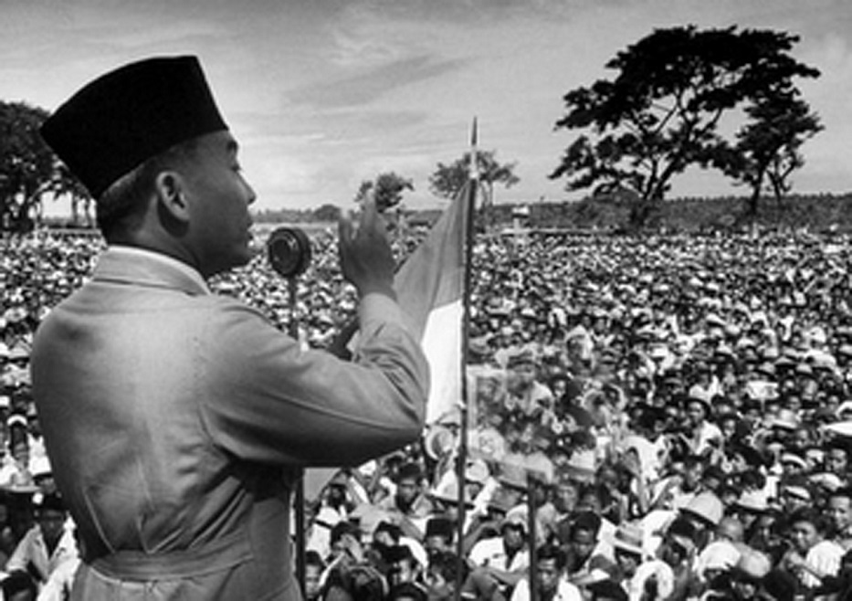
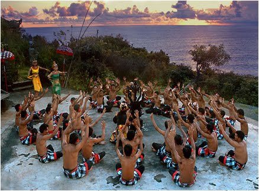

Sejarah Indonesia
Sejarah Indonesia meliputi suatu rentang waktu yang sangat panjang yang dimulai sejak zaman prasejarah berdasarkan penemuan "Manusia Jawa" yang berusia 1,7 juta tahun yang lalu. Periode sejarah Indonesia dapat dibagi menjadi lima era: Era Prakolonial, munculnya kerajaan-kerajaan Hindu-Buddha serta Islam di Jawa dan Sumatera yang terutama mengandalkan perdagangan; Era Kolonial, masuknya orang-orang Eropa (terutama Belanda dan Portugis) yang menginginkan rempah-rempah mengakibatkan penjajahan oleh Belanda selama sekitar 3,5 abad antara awal abad ke-17 hingga pertengahan abad ke-20; Era Kemerdekaan Awal, pasca-Proklamasi Kemerdekaan Indonesia (1945) sampai jatuhnya Soekarno (1966); Era Orde Baru, 32 tahun masa pemerintahan Soeharto (1966–1998); serta Orde Reformasi yang berlangsung sampai sekarang.

Sosial-Budaya
Kebudayaan nasional yang berlandaskan Pancasila adalah perwujudan cipta, karya dan karsa bangsa Indonesia dan merupakan keseluruhan daya upaya manusia Indonesia untuk mengembangkan harkat dan martabat sebagai bangsa, serta diarahkan untuk memberikan wawasan dan makna pada pembangunan nasional dalam segenap bidang kehidupan bangsa. Dengan demikian Pembangunan Nasional merupakan pembangunan yang berbudaya.Departemen Pendidikan dan Kebudayaan, Wujud, Arti dan Puncak-Puncak Kebudayaan Lama dan Asli bagi Masyarakat Pendukungnya, Semarang: P&K, 199

Alam Nusantara
Indonesia punya keindahan alam yang luar biasa. Dianugerahi lanskap yang seakan tak pernah habis. Dari ujung barat hingga timur, deretan gunung, lembah, laut, danau, hingga taman nasional menunggu untuk dijelajah.
Ini hanyalah secuil daya tarik wisata yang ditawarkan negeri agraris sekaligus bahari ini, dengan eksistensi suku dan budaya sebagai bumbunya. Lanskap yang disuguhkan Bumi Pertiwi seakan tak berujung, mulai dari deretan pegunungan yang megah hingga kekayaan biota bawah laut.
Inilah Pemandangan Alam Paling Indah di Indonesia.menurut saya keindahan alam di indonesia itu sangat banyak dan beraneka ragam yang sangat indah sekali contohnya adalah Pulau seribu, pulau bidadari,Danau 3 warna dan masih banyak lagi.